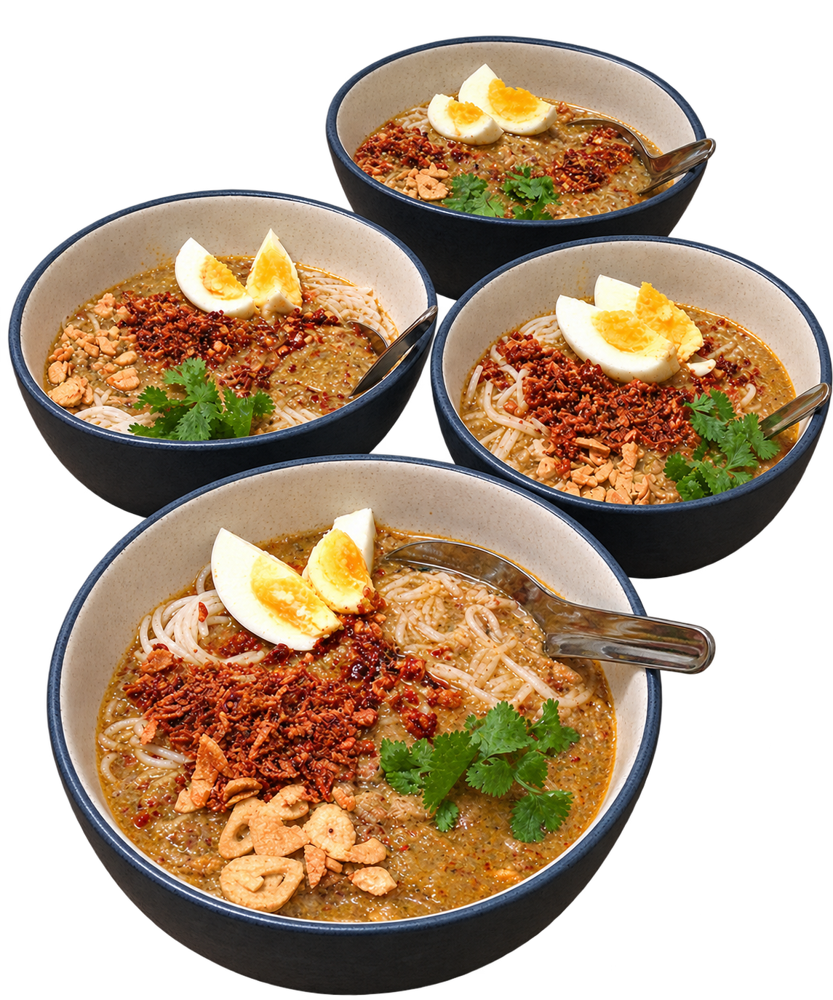
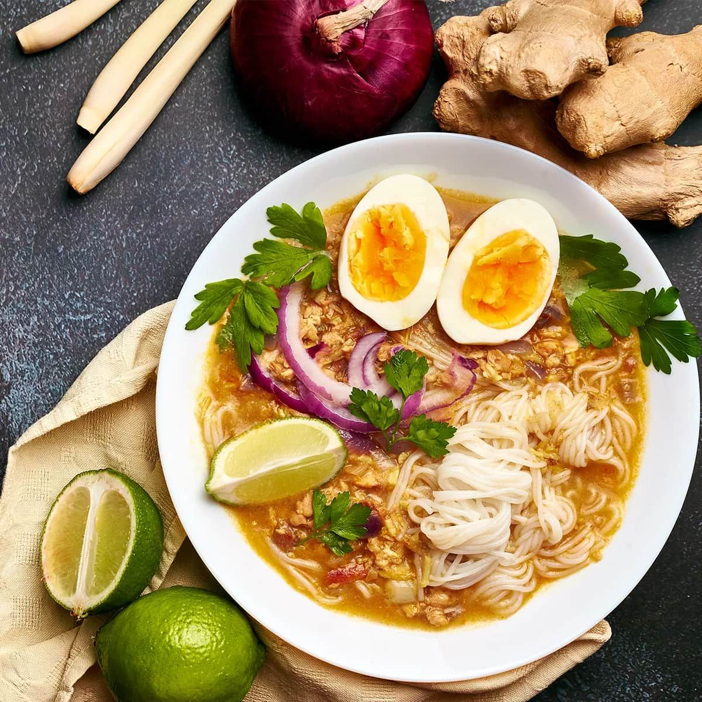
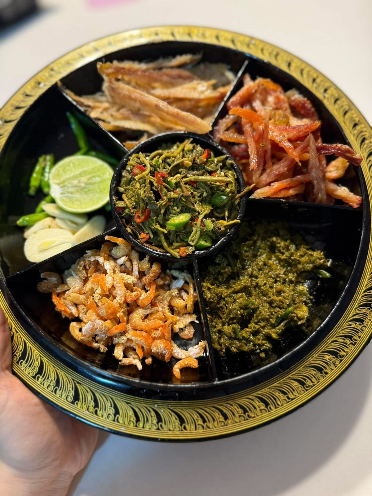
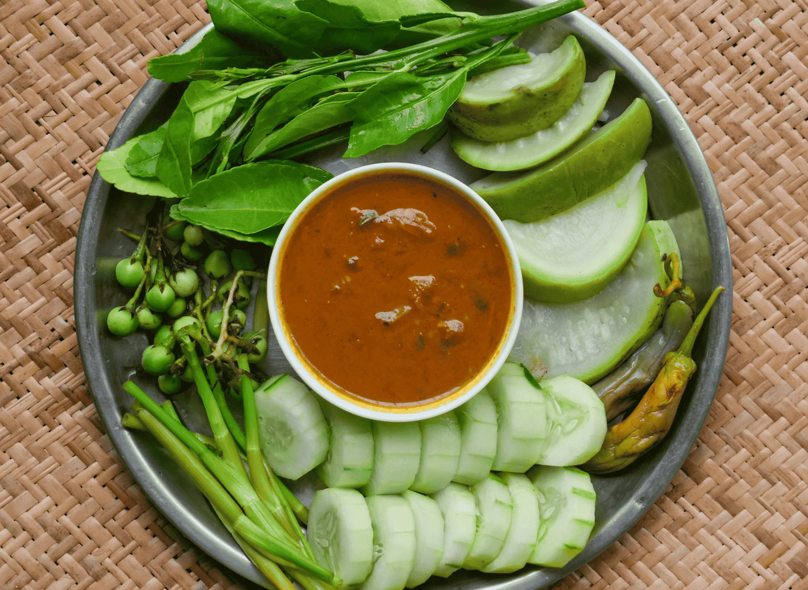
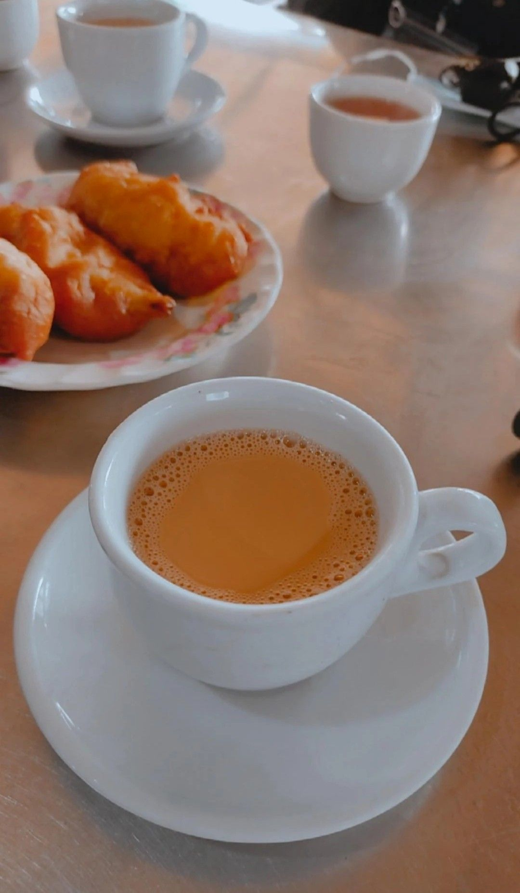
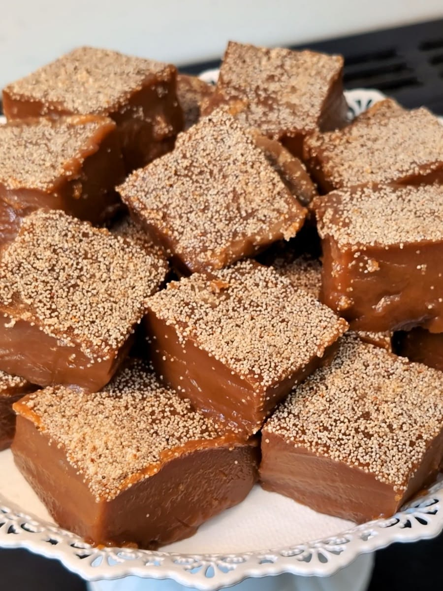

TRADITIONAL BURMESE FOOD
Discover 100+ traditional dishes, snacks and drinks from Myanmar.
EXPLORE OUR FOODAuthentic flavors from across Myanmar.

From comforting rice dishes to flavorful curries, noodles, snacks and traditional desserts, explore the food that makes Myanmar feel like home.
EXPLORE MYANMAR




